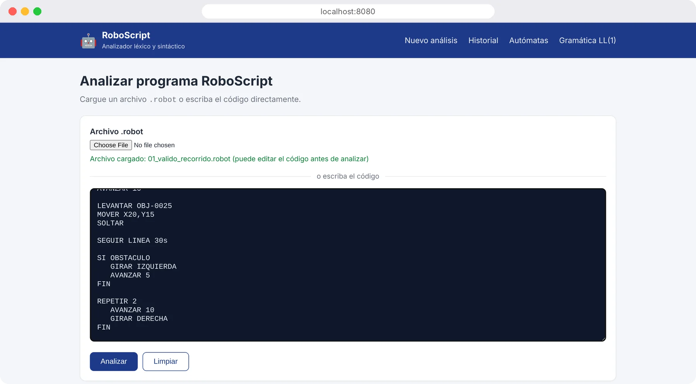
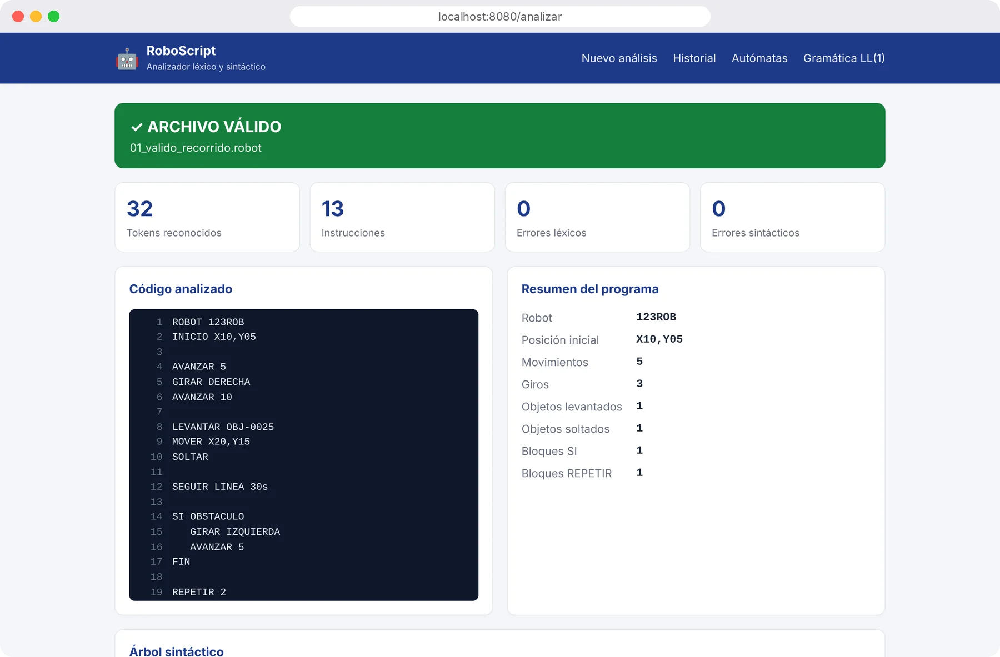
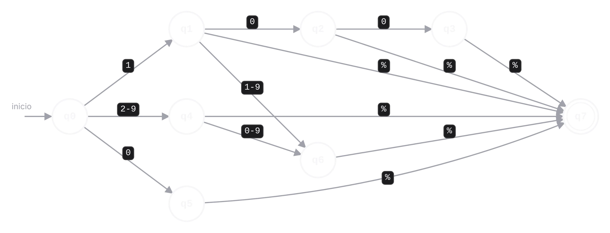
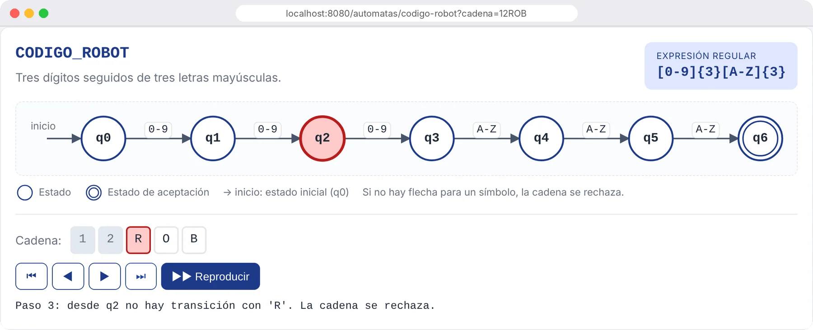
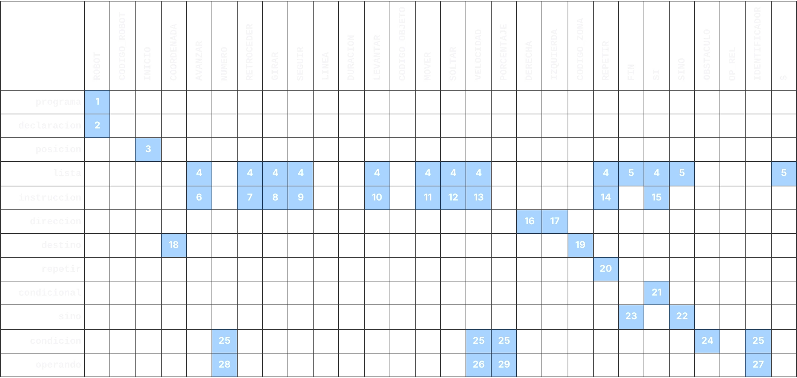
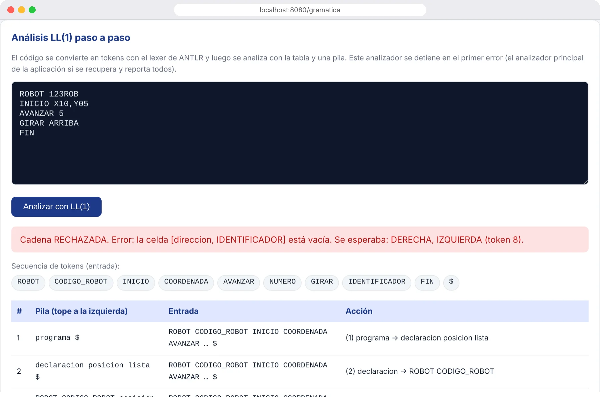
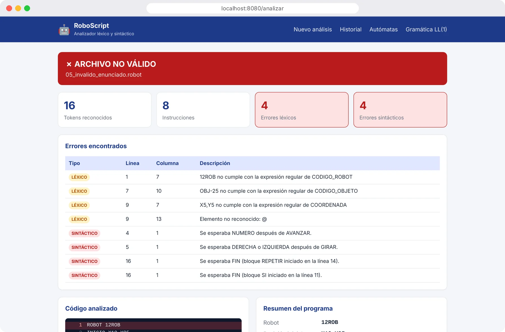
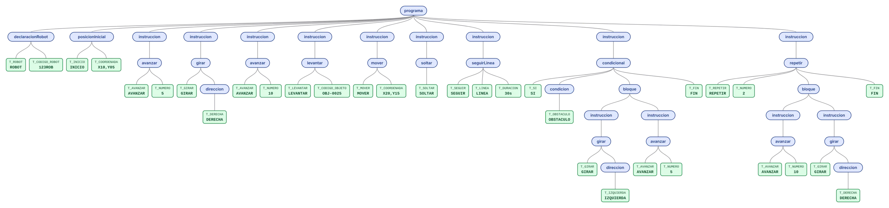
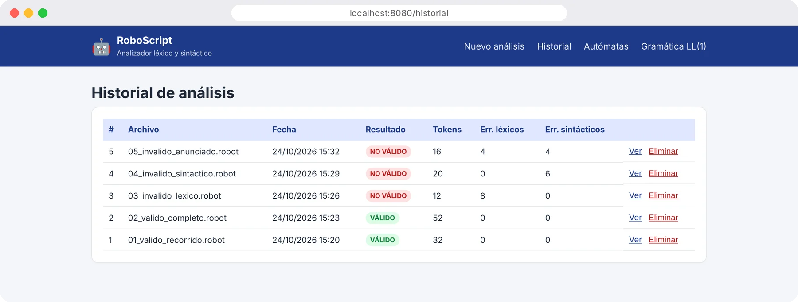
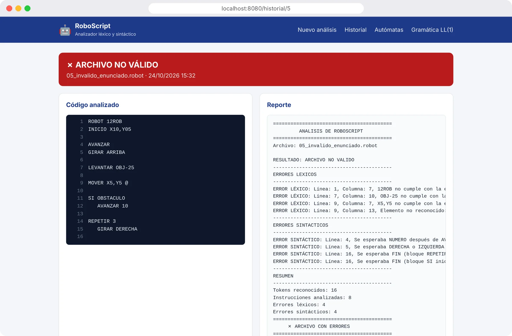

Proyecto final · Autómatas y Lenguajes Formales
RoboScript
Un analizador léxico y sintáctico para un lenguaje de instrucciones de robots.
Avance con → ↓ o Espacio, retroceda con ← ↑.
El lenguaje.
Qué es RoboScript y cómo se analiza.
El lenguaje
Instrucciones simples. Reglas estrictas.
ROBOT 123ROB INICIO X10,Y05 AVANZAR 5 GIRAR DERECHA LEVANTAR OBJ-0025 MOVER X20,Y15 SOLTAR SEGUIR LINEA 30s SI OBSTACULO GIRAR IZQUIERDA FIN REPETIR 2 AVANZAR 10 FIN
Leeun archivo .robot cargado o escrito en la página.
Reconocecada token y verifica la gramática con ANTLR 4.
Reportacada error con su línea, el árbol y un resumen.
No es un robot ni una simulación: el objetivo es reconocer el lenguaje.
Arquitectura
Del archivo al reporte, en cinco pasos.
Los errores de cada etapa se registran aparte y el análisis continúa. Cada resultado se guarda en el historial (H2).
Spring Boot · ANTLR 4 · patrón MVC con capa de servicio
Tecnologías
Herramientas profesionales, de punta a punta.
La aplicación
Cargar. Analizar. Revisar.


Página principal y resultado de 01_valido_recorrido.robot: válido, 32 tokens, 13 instrucciones.
Análisis léxico.
De caracteres sueltos a tokens con nombre.
Análisis léxico
27 tokens. Cada uno, una expresión regular.
| Token | Expresión regular | Válido | Inválido |
|---|---|---|---|
| CODIGO_ROBOT | [0-9]{3}[A-Z]{3} | 123ROB | 12ROB |
| CODIGO_ZONA | Z-[0-9]{2} | Z-05 | Z-5 |
| CODIGO_OBJETO | OBJ-[0-9]{4} | OBJ-0025 | OBJ-25 |
| COORDENADA | X[0-9]{2},Y[0-9]{2} | X10,Y25 | X5,Y5 |
| PORCENTAJE | (100|[1-9]?[0-9])% | 75% | 150% |
| DURACION | [0-9]{2}(s|m) | 30s | 5s |
En la aplicación cada tipo aparece con el prefijo T_, como pide el enunciado. Espacios y comentarios // se ignoran.
Autómatas finitos
Cada expresión regular es un autómata.

Arriba PORCENTAJE · abajo CODIGO_ROBOT en vivo: 12ROB se rechaza en q2, 123ROB se acepta.
| 100% | acepta |
| 75% | acepta |
| 0% | acepta |
| 101% | rechaza |
| 150% | rechaza |
| 05% | rechaza |
9 autómatas, verificados en JFLAP y simulados paso a paso en la aplicación.
En la aplicación
El autómata, paso a paso.

Cadena
12ROB
Se detiene en
q2
Motivo
sin transición con 'R'
Cada token tiene su página: diagrama, tabla de transiciones δ, definición formal y simulador con botones para avanzar símbolo por símbolo.
Errores léxicos
Un error. Un mensaje. Sin cascada.
ROBOT 12ROB
Sin una regla de error, 12 se leería como NUMERO y ROB como IDENTIFICADOR, y el parser daría un error que no explica la causa.
Con ERR_CODIGO_ROBOT
ERROR LÉXICO: Línea 1, Columna 7 12ROB no cumple con la expresión regular de CODIGO_ROBOT
El token llega al parser con su tipo correcto: cero errores de rebote.
Seis reglas ERR_, una por token con formato, y SIMBOLO_INVALIDO para todo lo demás.
Análisis sintáctico.
De tokens a un programa con estructura.
Análisis sintáctico
Una gramática. Cero ambigüedad.
programa ::= declaracionRobot posicionInicial instruccion*
instruccion ::= avanzar | girar | seguirLinea | levantar
| mover | soltar | velocidad | repetir | condicional
avanzar ::= AVANZAR NUMERO
girar ::= GIRAR ( DERECHA | IZQUIERDA )
mover ::= MOVER ( COORDENADA | CODIGO_ZONA )
repetir ::= REPETIR NUMERO bloque FIN
condicional ::= SI condicion bloque ( SINO bloque )? FIN
condicion ::= OBSTACULO | operando OP_REL operando
29
producciones en BNF
LL(1)
sin conflictos en la tabla
Los bloques SI y REPETIR anidados necesitan una pila para emparejar cada FIN: un autómata finito no basta.
Tabla LL(1)
Un token basta para decidir.

FIRST disjuntosLas 10 instrucciones empiezan con 10 tokens distintos.
FOLLOW sin cruceslista → ε solo con $, FIN o SINO.
Celdas únicasUna producción por celda; vacía = error.
En la aplicación
La pila, paso a paso.

Entrada
GIRAR ARRIBA
Celda consultada
[direccion, IDENTIFICADOR]
Resultado
vacía → error
La pila muestra el tope a la izquierda; cada fila es una acción: expandir con una producción o emparejar un token.
Errores sintácticos
Mensajes claros. Y el análisis sigue.
missing NUMERO at 'GIRAR'→Línea 4:
Se esperaba NUMERO después de AVANZAR.mismatched input 'ARRIBA'→Línea 5:
Se esperaba DERECHA o IZQUIERDA después de GIRAR.(producción de error)→Se esperaba
FIN (bloque REPETIR iniciado en la línea 14).En la aplicación
Todos los errores, en una pantalla.

4 + 4
errores léxicos y sintácticos, con línea y columna
16
tokens reconocidos aun con errores
1
solo análisis: no se detiene en el primero
Árbol sintáctico
Cada archivo, con su árbol.

Los errores aparecen en rojo («falta NUMERO», «falta FIN») en el lugar exacto de la derivación. El árbol se descarga en PNG.
Resultados.
Archivos de prueba, pruebas unitarias y demostración.
Resultados
Cinco archivos. Todos los casos.
| Archivo | Resultado | Léxicos | Sintácticos | Qué prueba |
|---|---|---|---|---|
| 01_valido_recorrido.robot | Válido | 0 | 0 | Ejemplo válido del enunciado |
| 02_valido_completo.robot | Válido | 0 | 0 | Todas las estructuras del lenguaje |
| 03_invalido_lexico.robot | No válido | 8 | 0 | Un error por token con formato |
| 04_invalido_sintactico.robot | No válido | 0 | 6 | Tokens válidos en orden incorrecto |
| 05_invalido_enunciado.robot | No válido | 4 | 4 | Ejemplo inválido del enunciado |
Se detectan los seis errores del enunciado: código de robot, AVANZAR incompleto, giro no válido, código de objeto, símbolo no reconocido y SI/REPETIR sin FIN.
Historial
Cada análisis queda guardado.


H2 guarda archivo, fecha, resultado, conteos, código y reporte. Se puede abrir o eliminar cada análisis.
Calidad
39 pruebas. Todas en verde.
39
pruebas JUnit 5, incluidas pruebas parametrizadas que repiten un caso con varios datos.
Demostración
Seis pasos para verlo funcionar.
Cierre.
Lo que aprendimos construyendo RoboScript.
Conclusiones
Lo que aprendimos.
generan el autómata de cada token sin escribir la lectura a mano.
dan mensajes exactos y evitan errores en cascada.
cada instrucción empieza con un token distinto.
los tokens usan autómatas finitos; el programa, una pila.
Gracias.
¿Preguntas?